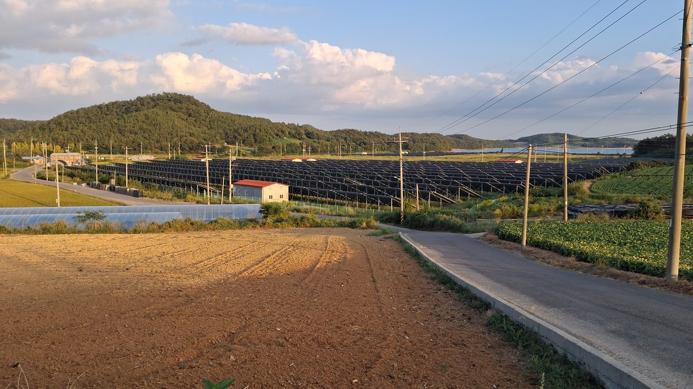

햇빛소득마을은 늘리는데 주민참여 REC 가중치는 내년 종료…우대가격 수준은 아직 미정

정부 목표 올해 700곳·2030년 3천곳 이상…전남광주 125곳 선정, 경과 규정으로 일부는 새 제도 밖
정부가 햇빛소득마을을 올해 700곳, 2030년까지 3천곳 이상으로 늘리려는 가운데 주민참여를 이끌어 온 보상 체계가 바뀐다. 내년부터 주민투자에 붙던 REC 가중치가 끝나고 신규 재생에너지는 정부 계약시장으로 옮겨 가며, 주민참여는 '우대가격' 항목으로 반영된다. 1MW 이하 소규모 사업을 위한 별도 계약시장이 열리고, 계통 제약 지역의 1MW 이하 공익형 주민참여 사업에는 12월 16일부터 계통 우선접속이 적용된다. 이선형 동신대 교수의 모델로는 998kW 마을이 REC 가중치를 받으면 연 매출 약 2억8천만원, 비용을 뺀 주민 소득이 연 1억원 이상인데, 전남광주특별시 관계자는 우대가격을 어디에 어느 수준으로 줄지 "아직 나온 것이 없다"고 했다. 1·2차 공모에서 125개 마을이 뽑힌 전남광주는 사업 시점에 따른 경과 규정이 있어 모든 마을이 새 제도를 적용받지는 않는다.
시민에너지 관점
998kW 마을의 주민 소득이 연 1억원을 넘는다는 계산은 REC 가중치를 전제로 한 것이어서, 우대가격 수준이 정해지지 않은 지금 마을들은 앞으로의 수익을 가늠하기 어려운 처지로 보인다. 가중치가 시장을 왜곡했으니 계약시장으로 옮기는 것이 맞다는 시각도 있지만, 제도를 바꾸는 일과 주민참여의 몫을 줄이는 일은 서로 다른 문제다. 덴마크 미델그룬덴 해상풍력에서 시민협동조합이 지분 절반을 가졌듯이, 주민이 지분을 직접 가진 사업은 보상 제도가 바뀌어도 수익이 지역에 남는 바탕이 된다. 정부는 2030년 3천곳 목표에 맞춰 우대가격의 적용 범위와 수준부터 서둘러 내놓아 마을이 사업 계획을 세울 수 있게 해야 한다.
정부는 우대가격을 어디에 어느 수준으로 줄지 서둘러 발표하고, 그 기준으로 계산한 마을 수지 예시를 함께 공개해야 한다. 지자체는 경과 규정을 적용받는 마을과 새 제도를 적용받는 마을을 나눠, 각각에 맞는 사업 계획 상담을 해 줄 수 있다. 마을과 협동조합은 REC 가중치를 전제로 한 수익 계산을 다시 점검하고, 대출과 배당 계획을 보수적으로 세워 두는 것이 안전하다. 1MW 이하 별도 계약시장과 12월 16일부터 적용되는 계통 우선접속을 마을이 놓치지 않도록 신청 방법과 일정 안내도 필요하다.
출처: 남도일보 2026-10-21 조태훈 원문 보기
太陽光所得村は増やすのに住民参加のREC加重値は来年終了…優遇価格の水準はまだ未定
政府目標は今年700カ所・2030年に3,000カ所以上…全南光州は125カ所を選定、経過規定で一部は新制度の対象外
韓国政府が太陽光所得村を今年700カ所、2030年までに3,000カ所以上に増やそうとする中で、住民参加を後押ししてきた報酬の仕組みが変わる。来年から住民投資に付いていたREC（再生可能エネルギー証書）の加重値がなくなり、新規の再生可能エネルギーは政府の契約市場に移り、住民参加は「優遇価格」の項目として反映される。1MW以下の小規模事業向けの別の契約市場が設けられ、系統制約のある地域の1MW以下の公益型住民参加事業には12月16日から系統への優先接続が適用される。東新大学のイ・ソンヒョン教授のモデルでは、998kWの村がREC加重値を受ければ年間売上は約2億8,000万ウォン、費用を差し引いた住民所得は年1億ウォン以上になるが、全南光州特別市の関係者は優遇価格をどこにどの水準で適用するかは「まだ何も出ていない」と述べた。第1次・第2次公募で125の村が選ばれた全南光州では、事業時期に応じた経過規定があるため、すべての村が新制度の適用を受けるわけではない。
市民エネルギーの視点
998kWの村の住民所得が年1億ウォンを超えるという試算はREC加重値を前提としたもので、優遇価格の水準が決まっていない今、村々は今後の収益を見通しにくい状況にあるとみられる。加重値が市場をゆがめたのだから契約市場に移すのは当然だという見方もあるが、制度を変えることと住民参加の取り分を減らすことは別の問題だ。デンマークのミデルグルンデン洋上風力で市民協同組合が持ち分の半分を持ったように、住民が直接持ち分を持つ事業は、報酬制度が変わっても収益が地域に残る土台になる。政府は2030年の3,000カ所という目標に合わせ、優遇価格の適用範囲と水準をまず急いで示し、村が事業計画を立てられるようにすべきだ。
政府は優遇価格をどこにどの水準で適用するかを急いで発表し、その基準で計算した村の収支の例をあわせて公開すべきだ。自治体は経過措置が適用される村と新制度が適用される村を分け、それぞれに合った事業計画の相談に乗ることができる。村と協同組合は、REC加重値を前提にした収益計算を見直し、融資と配当の計画を控えめに立てておくのが安全だ。1MW以下の別枠の契約市場と、12月16日から適用される系統優先接続を村が逃さないよう、申請方法と日程の案内も必要だ。
出典: Namdo Ilbo 2026-10-21 Cho Tae-hoon 原文を読む
阳光收入村在增加，居民参与的REC加权却将于明年终止，优惠价格水平尚未确定
政府目标今年700个、2030年3,000个以上；全南光州已入选125个，部分村庄因过渡规定不适用新制度
在韩国政府计划把阳光收入村今年扩大到700个、2030年前扩大到3,000个以上的同时，一直推动居民参与的激励机制将发生变化。从明年起，居民投资享有的REC（可再生能源证书）加权将结束，新增可再生能源转入政府合同市场，居民参与则以“优惠价格”项目来体现。将为1MW以下小规模项目单独开设合同市场，电网受限地区1MW以下的公益型居民参与项目从12月16日起享有电网优先接入。按照东新大学教授Lee Sun-hyung的模型，一个998kW的村如获得REC加权，年销售额约2.8亿韩元，扣除成本后的居民收入每年超过1亿韩元，但全南光州特别市一位相关人士表示，优惠价格适用于哪些部分、达到什么水平，“目前还没有任何结果”。在第一、二批征集中有125个村入选的全南光州，由于存在按项目时间划分的过渡规定，并非所有村庄都适用新制度。
市民能源视角
998kW的村居民年收入超过1亿韩元的测算是以REC加权为前提的，在优惠价格水平尚未确定的现在，各村似乎难以预估今后的收益。有观点认为加权扭曲了市场，转向合同市场理所当然，但改变制度与削减居民参与的份额是两回事。正如丹麦米德尔格伦登海上风电由市民合作社持有一半股份，居民直接持股的项目即使激励制度改变，收益也能留在地方。政府应配合2030年3,000个村的目标，尽快公布优惠价格的适用范围和水平，让村庄能够制定项目计划。
政府应尽快公布优惠价格适用于哪些项目、水平如何，并同时公开按此标准测算的村庄收支示例。地方政府可以把适用过渡规定的村庄和适用新制度的村庄区分开来，分别提供相应的项目计划咨询。村庄和合作社最好重新核查以REC加权为前提的收益测算，稳妥地制定贷款和分红计划。为免村庄错过1MW以下的单独合同市场和12月16日起实施的优先并网，还需要提供申请方法和时间安排的指引。
来源: Namdo Ilbo 2026-10-21 Cho Tae-hoon 查看原文
Korea expands Sunlight Income Villages but ends REC weighting for resident investment next year, with preferential price still undecided
Government targets 700 villages this year and over 3,000 by 2030; 125 selected in Jeonnam-Gwangju, some exempt under transition rules
The incentive system that has drawn residents into renewable projects is changing even as the government aims to expand Sunlight Income Villages to 700 this year and more than 3,000 by 2030. From next year, the REC (renewable energy certificate) weighting given to resident investment ends, new renewables move to a government contract market, and resident participation will be reflected through a "preferential price." A separate contract market will open for small projects of 1MW or less, and from December 16, public-interest resident projects of 1MW or less in grid-constrained areas will get priority grid connection. Under a model by Dongshin University professor Lee Sun-hyung, a 998kW village with REC weighting would earn about 280 million won a year in sales and more than 100 million won a year in resident income after costs, but a Jeonnam-Gwangju Special City official said that where and at what level the preferential price will apply "has not been decided yet." In Jeonnam-Gwangju, where 125 villages were selected in the first two rounds, transition rules based on project timing mean not every village will fall under the new system.
Citizen Energy View
The estimate that a 998kW village can earn residents more than 100 million won a year assumes REC weighting, so with the preferential price still unset, villages appear unable to gauge their future revenue. Some argue that weighting distorted the market and moving to contract markets is right, but changing the system and shrinking residents' share are two different matters. Just as a citizens' cooperative held half of Denmark's Middelgrunden offshore wind farm, projects in which residents hold equity directly keep revenue in the community even when incentive schemes change. In line with its target of 3,000 villages by 2030, the government should quickly set out the scope and level of the preferential price so villages can plan their projects.
The government should quickly announce where the preferential price will apply and at what level, and publish sample village budgets calculated on that basis. Local governments could separate villages covered by transition rules from those under the new system and offer each the planning advice it needs. Villages and cooperatives would be wise to recheck revenue calculations that assumed REC weighting and to draw up conservative loan and dividend plans. Guidance on how and when to apply is also needed so that villages do not miss the separate market for projects of 1 MW or less or the grid priority that takes effect on December 16.
Source: Namdo Ilbo 2026-10-21 Cho Tae-hoon Read the original